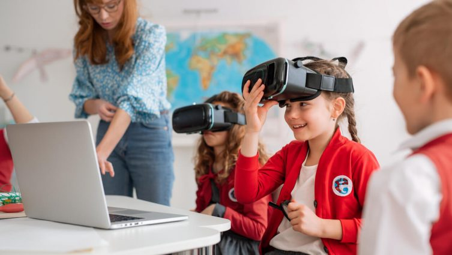
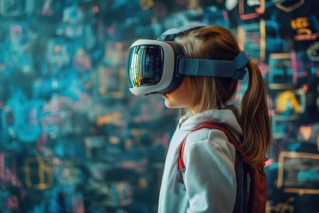
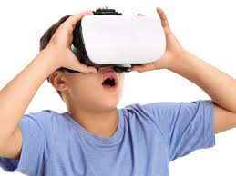
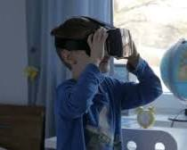
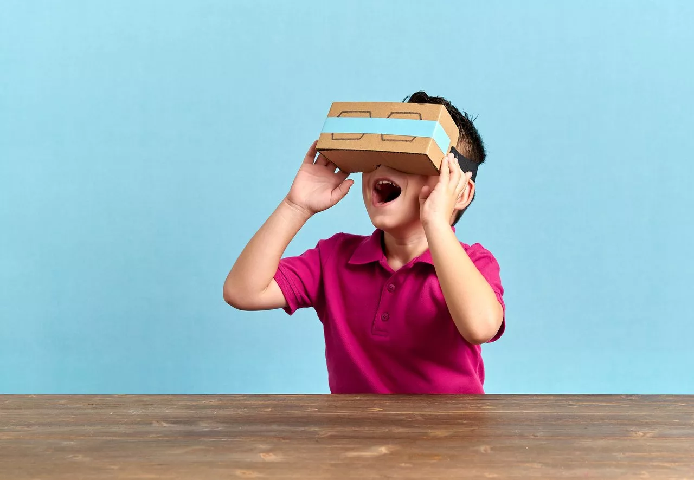
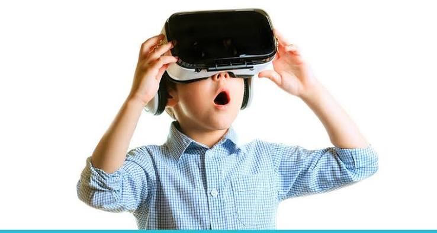
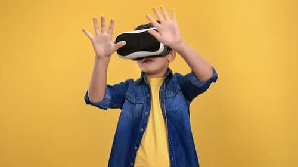
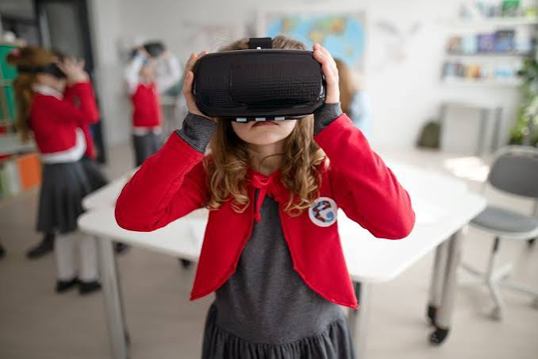
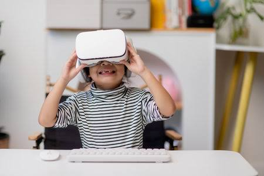
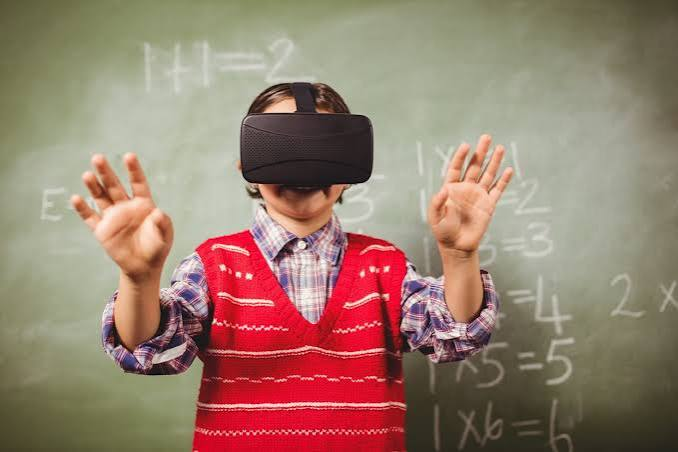

O Futuro Da Aprendizagem De Inglês
A Realidade Virtual (VR) permite criar ambientes digitais imersivos nos quais o usuário pode observar, ouvir e interagir com diferentes elementos. No ensino de inglês, essa tecnologia pode aproximar o estudante de situações de comunicação que seriam difíceis de reproduzir em uma sala de aula convencional.
Em vez de trabalhar o idioma apenas por meio de textos, exercícios e diálogos, o estudante pode entrar em ambientes virtuais como aeroportos, restaurantes, hotéis e espaços profissionais, utilizando o inglês dentro de diferentes contextos.
Aprender um idioma não significa apenas memorizar palavras e regras gramaticais. É necessário desenvolver a capacidade de compreender, falar, ler e utilizar o vocabulário de acordo com cada situação.
A Realidade Virtual pode reunir essas habilidades em uma mesma experiência. Uma atividade pode, por exemplo, colocar o estudante em um aeroporto virtual, onde ele precisa compreender instruções, localizar informações e interagir em inglês.
O objetivo não é apenas aprender o significado das palavras, mas compreender como e quando utilizá-las.
Listening — compreensão de diálogos, instruções e sons apresentados durante as experiências. Speaking — prática da comunicação oral em situações simuladas. Reading — interpretação de placas, menus, instruções e outros textos presentes nos ambientes. Vocabulary — contato com palavras e expressões relacionadas diretamente aos contextos apresentados.
A VR pode reproduzir situações do cotidiano e do ambiente profissional, permitindo que o estudante pratique o inglês em diferentes contextos. Aeroportos: embarque, localização, informações e comunicação durante viagens. Restaurantes: pedidos, conversas com atendentes e situações durante uma refeição. Hotéis: check-in, solicitações e comunicação com funcionários. Ambiente profissional: entrevistas, reuniões, apresentações e atendimento. Situações cotidianas: compras, transporte, turismo e outras interações.
Um dos principais diferenciais da Realidade Virtual é a possibilidade de colocar o estudante dentro do ambiente de aprendizagem. Em vez de apenas observar uma situação, ele pode explorá-la e interagir com seus elementos.
No ensino de inglês, essa característica permite criar experiências nas quais o idioma está relacionado diretamente ao contexto. Assim, a tecnologia pode complementar atividades tradicionais e oferecer novas oportunidades de prática.
A Realidade Virtual não substitui o professor nem garante, por si só, melhores resultados. Sua utilização precisa estar relacionada a objetivos pedagógicos e às necessidades dos estudantes.
O professor continua tendo um papel fundamental na orientação, no acompanhamento e na avaliação da aprendizagem. A VR funciona como uma ferramenta que amplia as possibilidades de experiência dentro e fora da sala de aula.
Apesar das possibilidades, a utilização de VR na educação também apresenta desafios. O custo dos equipamentos, a infraestrutura necessária, a disponibilidade de conteúdos adequados e a preparação dos professores são fatores que precisam ser considerados.
Por isso, a discussão sobre Realidade Virtual no ensino de inglês não deve se limitar à tecnologia em si, mas também considerar como, quando e para que ela é utilizada.
A Realidade Virtual representa uma possibilidade de aproximar o aprendizado de situações de comunicação mais contextualizadas. Conforme os equipamentos e conteúdos educacionais evoluem, novas formas de utilizar experiências imersivas no ensino de idiomas podem surgir.
Seu potencial não está em substituir os métodos tradicionais, mas em complementá-los com experiências que seriam difíceis de proporcionar em uma sala de aula convencional.









